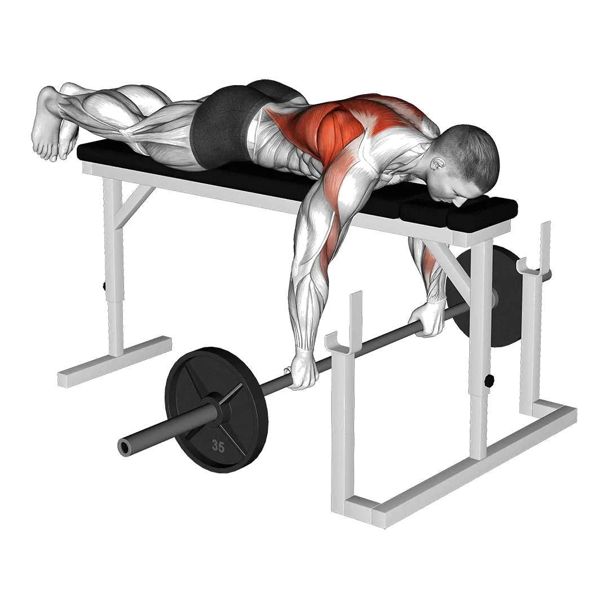

Bench pull
Bench pull menampilkan berat rata-rata dan standar kekuatan sebagai referensi untuk kategori punggung. Otot utama: Latissimus dorsi, Trapezius.
Berat rata-rata
PunggungLatihan punggungLatissimus dorsiTrapeziusPull

Otot yang dilatih
| Grup | Otot |
|---|---|
| Otot utama | Latissimus dorsi, Trapezius |
| Otot pendukung | Deltoid, Biseps brachii |
| Otot stabilisator | Oblique eksternal |
| Grip | Fleksor lengan bawah |
Berat rata-rata Bench pull [1RM]
| Level | ||
|---|---|---|
| Dasar | 37 kg (82 lbs) |
11 kg (24 lbs) |
| Pemula | 59 kg (130 lbs) |
20 kg (44 lbs) |
| Menengah | 87 kg (191 lbs) |
32 kg (71 lbs) |
| Mahir | 120 kg (264 lbs) |
48 kg (105 lbs) |
| Pro | 156 kg (345 lbs) |
65 kg (144 lbs) |
Catatan: standar ini adalah estimasi 1RM berdasarkan lifter rata-rata. Berat badan, usia, dan faktor pribadi lain dapat memengaruhi hasil. Lihat data detail pada tabel di bawah.
Standar kekuatan Bench pull (kg)
Pria berdasarkan berat badan (kg) [1RM]
| Berat badan | Dasar | Pemula | Menengah | Mahir | Pro |
|---|---|---|---|---|---|
| 50 | 18 | 32 | 51 | 74 | 101 |
| 55 | 22 | 37 | 57 | 82 | 110 |
| 60 | 26 | 42 | 63 | 89 | 118 |
| 65 | 30 | 47 | 70 | 96 | 126 |
| 70 | 33 | 52 | 75 | 103 | 134 |
| 75 | 37 | 56 | 81 | 110 | 142 |
| 80 | 41 | 61 | 86 | 116 | 149 |
| 85 | 45 | 65 | 92 | 122 | 156 |
| 90 | 48 | 70 | 97 | 128 | 162 |
| 95 | 52 | 74 | 102 | 134 | 169 |
| 100 | 55 | 78 | 107 | 140 | 175 |
| 105 | 59 | 82 | 111 | 145 | 181 |
| 110 | 62 | 86 | 116 | 150 | 187 |
| 115 | 65 | 90 | 120 | 155 | 193 |
| 120 | 68 | 94 | 125 | 160 | 198 |
| 125 | 72 | 97 | 129 | 165 | 203 |
| 130 | 75 | 101 | 133 | 170 | 209 |
| 135 | 78 | 105 | 137 | 174 | 214 |
| 140 | 81 | 108 | 141 | 179 | 219 |
Pria berdasarkan usia [1RM]
| Usia | Dasar | Pemula | Menengah | Mahir | Pro |
|---|---|---|---|---|---|
| 15 | 32 | 50 | 74 | 102 | 133 |
| 20 | 36 | 57 | 84 | 117 | 152 |
| 25 | 37 | 59 | 87 | 120 | 156 |
| 30 | 37 | 59 | 87 | 120 | 156 |
| 35 | 37 | 59 | 87 | 120 | 156 |
| 40 | 37 | 59 | 87 | 120 | 156 |
| 45 | 35 | 56 | 82 | 114 | 148 |
| 50 | 33 | 52 | 77 | 107 | 139 |
| 55 | 31 | 49 | 71 | 99 | 129 |
| 60 | 28 | 44 | 65 | 90 | 118 |
| 65 | 25 | 40 | 59 | 81 | 106 |
| 70 | 23 | 36 | 53 | 73 | 95 |
| 75 | 20 | 32 | 47 | 65 | 85 |
| 80 | 18 | 29 | 42 | 58 | 76 |
| 85 | 16 | 26 | 38 | 52 | 68 |
| 90 | 15 | 23 | 34 | 47 | 62 |
Wanita berdasarkan berat badan (kg) [1RM]
| Berat badan | Dasar | Pemula | Menengah | Mahir | Pro |
|---|---|---|---|---|---|
| 40 | 6 | 13 | 24 | 37 | 52 |
| 45 | 7 | 15 | 26 | 39 | 55 |
| 50 | 8 | 16 | 27 | 41 | 58 |
| 55 | 9 | 18 | 29 | 44 | 60 |
| 60 | 10 | 19 | 31 | 46 | 62 |
| 65 | 11 | 20 | 32 | 47 | 65 |
| 70 | 12 | 21 | 34 | 49 | 67 |
| 75 | 13 | 22 | 35 | 51 | 69 |
| 80 | 14 | 23 | 37 | 52 | 70 |
| 85 | 14 | 24 | 38 | 54 | 72 |
| 90 | 15 | 25 | 39 | 55 | 74 |
| 95 | 16 | 26 | 40 | 57 | 75 |
| 100 | 17 | 27 | 41 | 58 | 77 |
| 105 | 17 | 28 | 42 | 59 | 78 |
| 110 | 18 | 29 | 43 | 61 | 80 |
| 115 | 19 | 30 | 44 | 62 | 81 |
| 120 | 19 | 31 | 45 | 63 | 82 |
Wanita berdasarkan usia [1RM]
| Usia | Dasar | Pemula | Menengah | Mahir | Pro |
|---|---|---|---|---|---|
| 15 | 9 | 17 | 27 | 41 | 56 |
| 20 | 10 | 19 | 31 | 47 | 64 |
| 25 | 11 | 20 | 32 | 48 | 65 |
| 30 | 11 | 20 | 32 | 48 | 65 |
| 35 | 11 | 20 | 32 | 48 | 65 |
| 40 | 11 | 20 | 32 | 48 | 65 |
| 45 | 10 | 19 | 31 | 45 | 62 |
| 50 | 10 | 18 | 29 | 43 | 58 |
| 55 | 9 | 16 | 27 | 39 | 54 |
| 60 | 8 | 15 | 24 | 36 | 49 |
| 65 | 7 | 13 | 22 | 32 | 44 |
| 70 | 7 | 12 | 20 | 29 | 40 |
| 75 | 6 | 11 | 18 | 26 | 36 |
| 80 | 5 | 10 | 16 | 23 | 32 |
| 85 | 5 | 9 | 14 | 21 | 29 |
| 90 | 4 | 8 | 13 | 19 | 26 |
Catatan: barbell standar di gym umumnya berbobot 20 kg.
Cara membaca tabel
| Level | Deskripsi | Distribusi |
|---|---|---|
| Dasar | Menguasai teknik yang benar dan berlatih konsisten minimal 1 bulan. | Bawah 5% |
| Pemula | Berlatih konsisten minimal 6 bulan. | Atas 80% |
| Menengah | Berlatih konsisten lebih dari 2 tahun. | Atas 50% |
| Mahir | Berlatih terencana lebih dari 5 tahun. | Atas 20% |
| Pro | Menekuni latihan ini secara khusus lebih dari 5 tahun. | Atas 5% |
Latihan lainnya
Seluruh tubuh

Deadlift
Seluruh tubuh / BIG3

Bench press
Seluruh tubuh / BIG3

Squat
Seluruh tubuh / BIG3

Hex bar deadlift
Seluruh tubuh

Power clean
Seluruh tubuh

Romanian deadlift
Seluruh tubuh

Sumo deadlift
Seluruh tubuh

Clean and jerk
Seluruh tubuh

Snatch
Seluruh tubuh

Clean
Seluruh tubuh

Clean and press
Seluruh tubuh

Rack pull
Seluruh tubuh

Dumbbell Romanian deadlift
Seluruh tubuh / Dumbbell

Hang clean
Seluruh tubuh

Stiff-leg deadlift
Seluruh tubuh

Muscle-up
Seluruh tubuh / Bodyweight

Power snatch
Seluruh tubuh

Thruster
Seluruh tubuh

Push jerk
Seluruh tubuh

Dumbbell deadlift
Seluruh tubuh / Dumbbell

Deficit deadlift
Seluruh tubuh

Single-leg Romanian deadlift
Seluruh tubuh

Burpee
Seluruh tubuh / Bodyweight

Hang power clean
Seluruh tubuh

Split jerk
Seluruh tubuh

Dumbbell snatch
Seluruh tubuh / Dumbbell

Clean high pull
Seluruh tubuh

Snatch deadlift
Seluruh tubuh

Clean pull
Seluruh tubuh

Paused deadlift
Seluruh tubuh

Single-leg deadlift
Seluruh tubuh

Muscle snatch
Seluruh tubuh

Jefferson deadlift
Seluruh tubuh

Snatch pull
Seluruh tubuh

Wall ball
Seluruh tubuh

Zercher deadlift
Seluruh tubuh

Single-leg dumbbell deadlift
Seluruh tubuh / Dumbbell

Dumbbell clean and press
Seluruh tubuh / Dumbbell

Ring muscle-up
Seluruh tubuh / Bodyweight

Dumbbell thruster
Seluruh tubuh / Dumbbell

Hang snatch
Seluruh tubuh

Dumbbell high pull
Seluruh tubuh / Dumbbell

Dumbbell hang clean
Seluruh tubuh / Dumbbell

Behind-the-back deadlift
Seluruh tubuh

Clap pull-up
Seluruh tubuh

Squat thrust
Seluruh tubuh
Dada
Bench press
Dada / BIG3

Dumbbell bench press
Dada / Dumbbell

Push-up
Dada / Bodyweight

Incline bench press
Dada

Incline dumbbell bench press
Dada / Dumbbell

Close-grip bench press
Dada

Machine chest fly
Dada / Machine

Dumbbell fly
Dada / Dumbbell

Decline dumbbell fly
Dada / Dumbbell

Decline bench press
Dada

Smith machine bench press
Dada / Machine

Cable fly
Dada / Cable

Chest press
Dada

Floor press
Dada

Incline dumbbell fly
Dada / Dumbbell

Dumbbell floor press
Dada / Dumbbell

Decline dumbbell bench press
Dada / Dumbbell

Paused bench press
Dada

One-arm push-up
Dada / Bodyweight

Reverse-grip bench press
Dada

Diamond push-up
Dada / Bodyweight

Close-grip dumbbell bench press
Dada / Dumbbell

Bench pin press
Dada

Wide-grip bench press
Dada

Decline push-up
Dada / Bodyweight

Close-grip incline bench press
Dada

Incline push-up
Dada / Bodyweight

Close-grip push-up
Dada / Bodyweight

Archer push-up
Dada / Bodyweight

Spoto press
Dada
Punggung
Deadlift
Punggung / BIG3

Pull-up
Punggung / Bodyweight

Bent-over row
Punggung

Lat pulldown
Punggung

Chin-up
Punggung / Bodyweight

Dumbbell row
Punggung / Dumbbell

Seated cable row
Punggung / Cable

Barbell shrug
Punggung / Barbell

T-bar row
Punggung

Dumbbell shrug
Punggung / Dumbbell

Pendlay row
Punggung

Machine row
Punggung / Machine

Dumbbell pullover
Punggung / Dumbbell

Dumbbell reverse fly
Punggung / Dumbbell

Chest-supported dumbbell row
Punggung / Dumbbell

Close-grip lat pulldown
Punggung

Machine reverse fly
Punggung / Machine

Reverse-grip lat pulldown
Punggung

Neutral-grip pull-up
Punggung / Bodyweight

Straight-arm pulldown
Punggung

Cable reverse fly
Punggung / Cable

Yates row
Punggung

Bent-over dumbbell row
Punggung / Dumbbell

Back extension
Punggung

Bench pull
Punggung

Machine back extension
Punggung / Machine

Barbell pullover
Punggung / Barbell

One-arm pull-up
Punggung / Bodyweight

Dumbbell bench pull
Punggung / Dumbbell

Inverted row
Punggung

Renegade row
Punggung

One-arm lat pulldown
Punggung

One-arm seated cable row
Punggung / Cable

Cable upright row
Punggung / Cable

Machine shrug
Punggung / Machine

Hex bar shrug
Punggung

Smith machine shrug
Punggung / Machine

Dumbbell incline Y raise
Punggung / Dumbbell

Cable shrug
Punggung / Cable

Bent-arm barbell pullover
Punggung / Barbell

Barbell power shrug
Punggung / Barbell

Meadows row
Punggung

Behind-the-back barbell shrug
Punggung / Barbell

Reverse hyperextension
Punggung
Bahu

Shoulder press
Bahu

Dumbbell shoulder press
Bahu / Dumbbell

Dumbbell lateral raise
Bahu / Dumbbell

Military press
Bahu

Seated shoulder press
Bahu

Seated dumbbell shoulder press
Bahu / Dumbbell

Machine shoulder press
Bahu / Machine

Push press
Bahu

Upright row
Bahu

Dumbbell front raise
Bahu / Dumbbell

Cable lateral raise
Bahu / Cable

Arnold press
Bahu

Face pull
Bahu

Neck curl
Bahu

Dumbbell upright row
Bahu / Dumbbell

Machine lateral raise
Bahu / Machine

Behind-the-neck press
Bahu

Handstand push-up
Bahu / Bodyweight

Barbell front raise
Bahu / Barbell

Log press
Bahu

Landmine press
Bahu

Neck extension
Bahu

Z press
Bahu

Viking press
Bahu

Shoulder pin press
Bahu

Dumbbell z press
Bahu / Dumbbell

One-arm landmine press
Bahu

Dumbbell external rotation
Bahu / Dumbbell

Pike push-up
Bahu / Bodyweight

Dumbbell push press
Bahu / Dumbbell

Dumbbell face pull
Bahu / Dumbbell

Cable external rotation
Bahu / Cable
Lengan

Dumbbell curl
Lengan / Dumbbell

Barbell curl
Lengan / Barbell

Hammer curl
Lengan

EZ bar curl
Lengan

Preacher curl
Lengan

Cable bicep curl
Lengan / Cable

Dumbbell concentration curl
Lengan / Dumbbell

Incline dumbbell curl
Lengan / Dumbbell

Machine bicep curl
Lengan / Machine

Strict curl
Lengan

One-arm cable bicep curl
Lengan / Cable

One-arm dumbbell preacher curl
Lengan / Dumbbell

Incline hammer curl
Lengan

Spider curl
Lengan

Zottman curl
Lengan

Seated dumbbell curl
Lengan / Dumbbell

Cheat curl
Lengan

Cable hammer curl
Lengan / Cable

Overhead cable curl
Lengan / Cable

Incline cable curl
Lengan / Cable

Lying cable curl
Lengan / Cable

Dip
Lengan / Bodyweight

Tricep pushdown
Lengan

Lying tricep extension
Lengan

Tricep rope pushdown
Lengan

One-arm pulldown
Lengan

Dumbbell tricep extension
Lengan / Dumbbell

Tricep extension
Lengan

Lying dumbbell tricep extension
Lengan / Dumbbell

Seated dips machine
Lengan / Machine

Dumbbell tricep kickback
Lengan / Dumbbell

Cable overhead tricep extension
Lengan / Cable

Machine tricep extension
Lengan / Machine

Seated dumbbell tricep extension
Lengan / Dumbbell

Reverse-grip tricep pushdown
Lengan

Jm press
Lengan

Tate press
Lengan

Ring dips
Lengan / Bodyweight

Bench dip
Lengan / Bodyweight

Wrist curl
Lengan

Reverse barbell curl
Lengan / Barbell

Reverse wrist curl
Lengan

Dumbbell wrist curl
Lengan / Dumbbell

Dumbbell reverse wrist curl
Lengan / Dumbbell

Dumbbell reverse curl
Lengan / Dumbbell
Kaki
Squat
Kaki / BIG3

Sled leg press
Kaki

Front squat
Kaki

Hip thrust
Kaki

Leg extension
Kaki

Horizontal leg press
Kaki

Hack squat
Kaki

Seated leg curl
Kaki

Dumbbell Bulgarian split squat
Kaki / Dumbbell

Goblet squat
Kaki

Lying leg curl
Kaki

Machine calf raise
Kaki / Machine

Dumbbell lunge
Kaki / Dumbbell

Box squat
Kaki

Bodyweight squat
Kaki

Vertical leg press
Kaki

Bulgarian split squat
Kaki

Seated calf raise
Kaki

Smith machine squat
Kaki / Machine

Hip abduction
Kaki

Good morning
Kaki

Zercher squat
Kaki

Barbell lunge
Kaki / Barbell

Hip adduction
Kaki

Overhead squat
Kaki

Barbell calf raise
Kaki / Barbell

Dumbbell squat
Kaki / Dumbbell

Split squat
Kaki

Dumbbell calf raise
Kaki / Dumbbell

Cable pull-through
Kaki / Cable

Standing leg curl
Kaki

Landmine squat
Kaki

Barbell reverse lunge
Kaki / Barbell

Barbell glute bridge
Kaki / Barbell

Single-leg press
Kaki

Sled press calf raise
Kaki

Single-leg squat
Kaki

Belt squat
Kaki

Safety bar squat
Kaki

Pistol squat
Kaki

Paused squat
Kaki

Barbell hack squat
Kaki / Barbell

Sumo squat
Kaki

Cable kickback
Kaki / Cable

Bodyweight calf raise
Kaki

Lunge
Kaki

Glute bridge
Kaki

Pin squat
Kaki

Walking lunge
Kaki

Dumbbell front squat
Kaki / Dumbbell

Dumbbell split squat
Kaki / Dumbbell

Reverse lunge
Kaki

Squat jump
Kaki

Nordic hamstring curl
Kaki

Sissy squat
Kaki

Half squat
Kaki

Glute ham raise
Kaki

Cable leg extension
Kaki / Cable

Single-leg seated calf raise
Kaki

Side lunge
Kaki

Glute kickback
Kaki

Donkey calf raise
Kaki

Dumbbell walking calf raise
Kaki / Dumbbell

Side leg raise
Kaki / Bodyweight

Jefferson squat
Kaki

Floor hip abduction
Kaki

Hip extension
Kaki

Floor hip extension
Kaki
Core

Sit-up
Core / Bodyweight

Cable crunches
Core / Cable

Machine seated crunches
Core / Machine

Crunch
Core / Bodyweight

Dumbbell side bend
Core / Dumbbell

Cable woodchopper
Core / Cable

Hanging leg raise
Core / Bodyweight

Russian twist
Core / Bodyweight

Lying leg raise
Core / Bodyweight

Decline sit-up
Core / Bodyweight

Hanging knee raise
Core / Bodyweight

Ab wheel rollout
Core

Toes-to-bar
Core / Bodyweight

Decline crunches
Core / Bodyweight

Jumping jack
Core / Bodyweight

Bicycle crunches
Core / Bodyweight

Reverse crunches
Core / Bodyweight

Flutter kicks
Core / Bodyweight

Mountain climber
Core / Bodyweight

High pulley crunches
Core / Bodyweight

Standing cable crunches
Core / Cable

Superman
Core / Bodyweight

Side crunch
Core / Bodyweight

Roman chair side bend
Core

Scissor kick
Core / Bodyweight